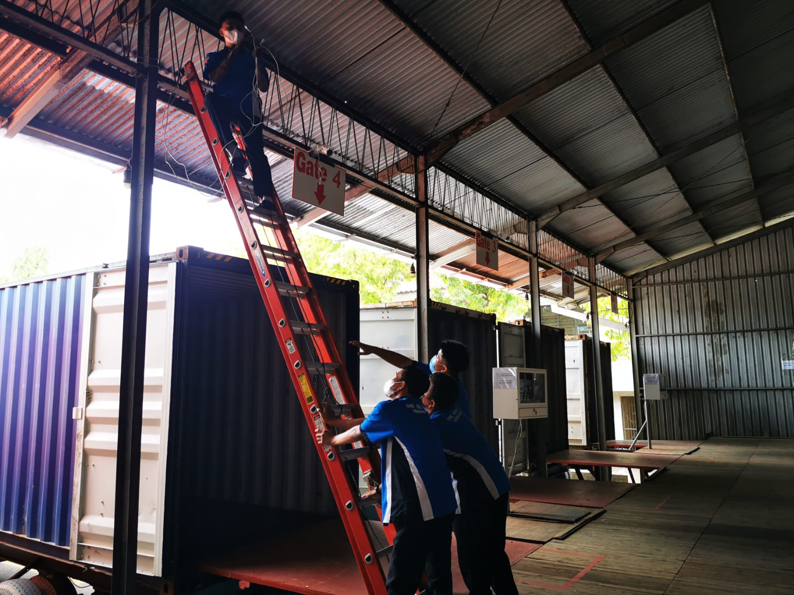

PKL di sekolah saya menjadi salah satu syarat untuk kelulusan. Kelas saya di berikan waktu selama 9 bulan untuk melaksanakan PKL. Saya PKL di PT. Multi Manao Indonesia, sebagai IT. Saya PKL bersama 3 teman saya, dan di berikan
tugas untuk membuat sebuah aplikasi peminjaman barang. Saya di berikan tugas untuk menjadi Front End Developer dan Database Engineer.
Tugas dari Front End Developer yaitu, merancang ide dasar tampilan website atau aplikasi. Tugas dari Database Engineer yaitu, merancang, memelihara, dan mengoptimalkan infrastruktur data untuk pengumpulan, pengelolaan,
transformasi, dan akses data.
Tidak hanya fokus pada sebuah aplikasi peminjaman barang saja, saya dan teman teman saya juga di berikan tugas mengentry sebuah data di Ms. Excel dan Spreadsheet, memperbaiki sebuah kabel jaringan, merakit kembali sebuah PC,
memperbaiki PC, dan lain sebagainya.